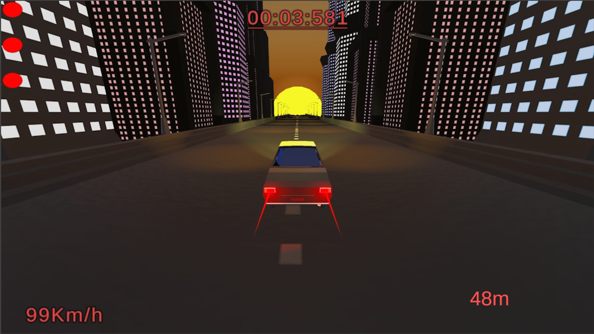
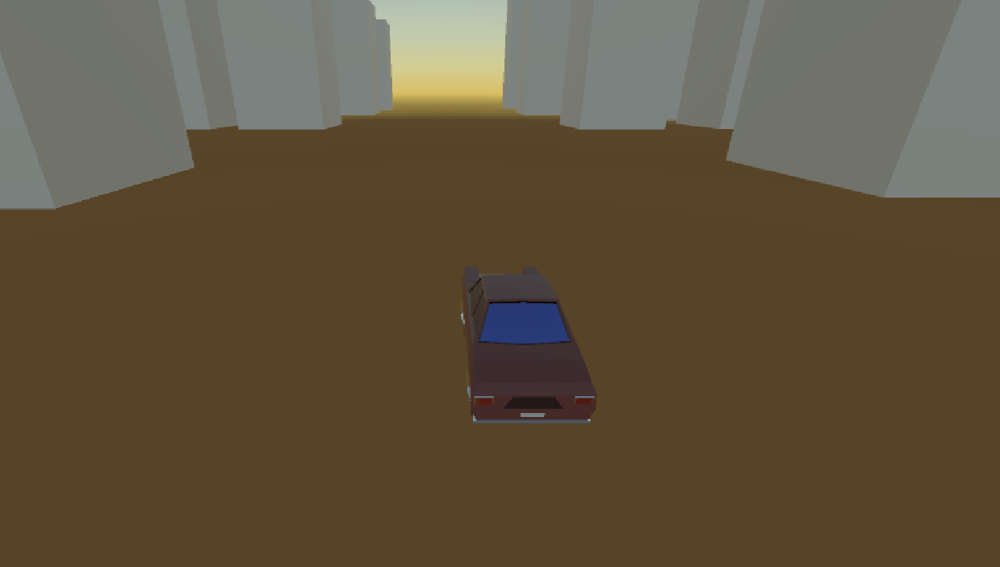
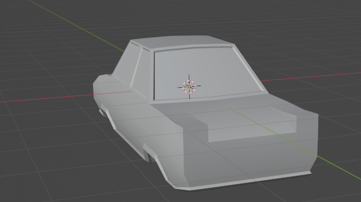

Driving game was my first true videogame made in a real game engine. It is a 3D runner game, where you manouver a car between obstacles in an attempt to survive a certain distance. It was made in about a week for a game programming beginners course during my first semester at XAMK. Driving Game was a solo project.
The initial specifications for the task were to make a side scroller with some form of obstacles and collectibles. The task was set to follow the Unity tutorial series. I felt that I could do something more challenging, and decided to take the game to 3D and use my own assets instead. I took inspiration from the music videos of Synthwave and Retrowave, which often include a retro car driving through a futuristic scene. And so I set to make an endless runner with a cool retro car driving through a vast futuristic city.

I began the project by designing the car. It was modeled with the lessons learned during the modeling course of that semester. It is based on the BMW cars of the 80s, being some combination of the BMW E30 and BMW 2002. Designing the car was an intresting process, and I learned a lot during it. The final car was designated as the "Datura Maxima".
Designing the city was a lesson on texture mapping and prefab building. The cityscape is semi-randomly generated during runtime from predetermined prefabs, and only the sun and the car exist consistently. Learning how to fit all the generated pieces together was a challenge.

While it is clear that the end result is not perfect in anyway, I still consider it a good start in Gamedev. The end result is in spite of it's flaws quite a stylish creation in my opinion. Some features had to be rushed due to the deadline closing in faster than expected. As such the scripts are full of holes and still quite buggy.
In relation to the goals I established for myself in the beginning, I feel like I surpassed them wildly. I learned so much about programming and especially what practices to avoid in the future. The game is a complete mess on the inside, with every script being dependent on each other. I am however proud of the aesthetic and feel of the game. In spite of the mistakes made along the way, this project was an amazing start to a hopefully fruitful career in video game developement.